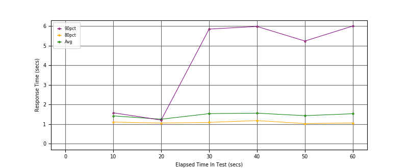
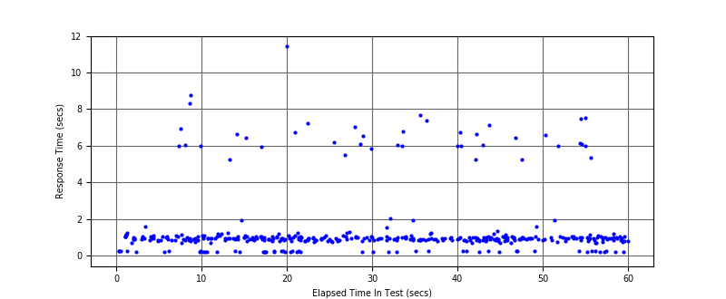
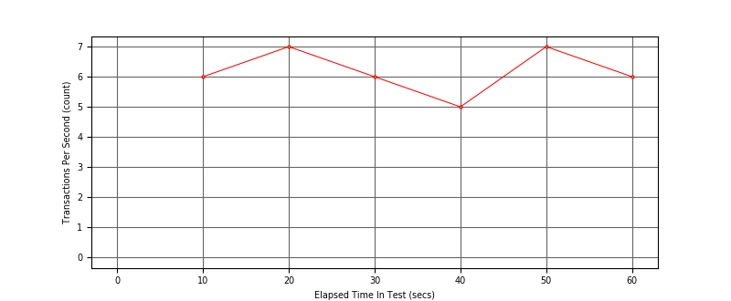

Performance Results Report
Summary
transactions: 411
errors: 35
run time: 60 secs
rampup: 0 secs
test start: 2017-08-22 20:37:45
test finish: 2017-08-22 20:38:45
time-series interval: 10 secs
workload configuration:
| group name | threads | script name |
|---|
| user_group-1 | 7 | regular_user.py |
| user_group-2 | 3 | intensive_user.py |
All Transactions
Transaction Response Summary (secs)
| count | min | avg | 80pct | 90pct | 95pct | max | stdev |
|---|
| 411 | 0.212 | 1.442 | 1.066 | 5.233 | 6.181 | 11.431 | 1.791 |
Interval Details (secs)
| interval | count | rate | min | avg | 80pct | 90pct | 95pct | max | stdev |
|---|
| 1 | 65 | 6.50 | 0.221 | 1.416 | 1.101 | 1.574 | 6.039 | 8.744 | 1.854 |
| 2 | 76 | 7.60 | 0.212 | 1.247 | 1.051 | 1.204 | 5.960 | 11.431 | 1.706 |
| 3 | 66 | 6.60 | 0.221 | 1.531 | 1.085 | 5.846 | 6.527 | 7.217 | 1.846 |
| 4 | 55 | 5.50 | 0.228 | 1.554 | 1.177 | 5.979 | 6.768 | 7.680 | 1.835 |
| 5 | 74 | 7.40 | 0.216 | 1.428 | 1.026 | 5.236 | 6.421 | 7.111 | 1.699 |
| 6 | 65 | 6.50 | 0.223 | 1.526 | 1.055 | 6.001 | 6.165 | 7.508 | 1.882 |
Graphs
Response Time: 10 sec time-series
Response Time: raw data (all points)
Throughput: 5 sec time-series

Custom Timer: Latency
Timer Summary (secs)
| count | min | avg | 80pct | 90pct | 95pct | max | stdev |
|---|
| 401 | 0.212 | 1.442 | 1.066 | 5.233 | 6.181 | 11.431 | 1.791 |
Interval Details (secs)
| interval | count | rate | min | avg | 80pct | 90pct | 95pct | max | stdev |
|---|
| 1 | 65 | 6.50 | 0.221 | 1.416 | 1.101 | 1.574 | 6.039 | 8.744 | 1.854 |
| 2 | 76 | 7.60 | 0.212 | 1.247 | 1.051 | 1.204 | 5.960 | 11.431 | 1.706 |
| 3 | 66 | 6.60 | 0.221 | 1.531 | 1.085 | 5.846 | 6.527 | 7.217 | 1.846 |
| 4 | 55 | 5.50 | 0.228 | 1.554 | 1.177 | 5.979 | 6.768 | 7.680 | 1.835 |
| 5 | 74 | 7.40 | 0.216 | 1.428 | 1.026 | 5.236 | 6.421 | 7.110 | 1.699 |
| 6 | 65 | 6.50 | 0.223 | 1.526 | 1.055 | 6.000 | 6.165 | 7.508 | 1.882 |
Graphs
Response Time: 10 sec time-series

Response Time: raw data (all points)

Throughput: 10 sec time-series
